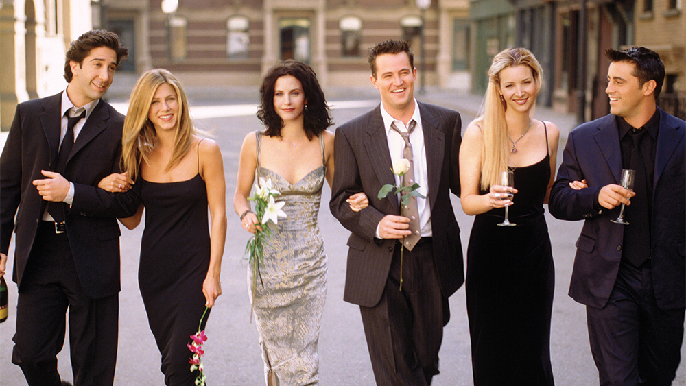

Merhaba, Ben Hülya Çırakoğulları. Samsun'da yaşıyorum. Eski film ve dizileri izlemeyi, tarih konulu kitapları okumayı çok severim. Uluslararası İlişkiler mezunuyum. Aynı zamanda Web geliştirme ile ilgileniyorum. Kodluyoruz'un bu eğitim serisi sayesinde harika şeyler öğrendim ve öğrenmeye devam ediyorum! Siz de aramıza katılın!
Friends
Friends, David Crane ve Marta Kauffman tarafından yaratılmış Amerikan yapımı sitcom türünde bir dizidir. 22 Eylül 1994 ile 6 Mayıs 2004 tarihleri arasında NBC'de yayınlanan dizi, on sezon sürdü. Manhattan'da yaşayan bir grup arkadaşın hayatı üzerinde dönen dizi, Warner Bros. Television şirketine bağlı Bright/Kauffman/Crane Productions yapımıdır.